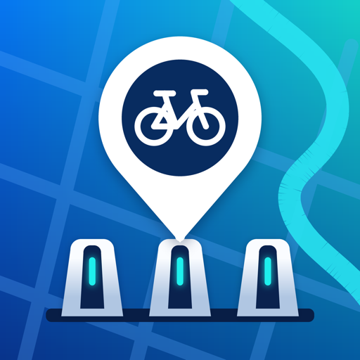

Never circle a full dock again.
Dock Finder checks live dock availability as you ride and tells you where to dock before you arrive. Out loud, with your phone locked in your pocket.
Say where you're going. Then just ride.
No tapping, no unlocking, no stopping at the curb to check a map. Dock Finder talks to you through your headphones.
Tell Siri
Hear where there's room
Get turn-by-turn
Everything you need at the end of a ride.
Built around the moment you actually need it: a block away, both hands on the handlebars.
Start a ride with Siri
Ask Dock Finder to start a ride to work.
When you get close, it checks your usual dock, and if it's full, names the nearest one with room.
Turn-by-turn to the dock
Spoken directions to the dock, with the next turn on your Lock Screen and in the Dynamic Island. If the dock fills up on the way, it reroutes you.
Alerts at saved places
Save Home, Work or School and pick a usual dock. Ride up and Dock Finder tells you where to dock, even if you never started a ride.
Check any station
Ask whether a station has room, find a dock near you or near a saved place, or hear how many bikes are out across the city.
One press with the Action Button
Hold the Action Button and hear the nearest station with room, plus how many classic bikes and e-bikes it has. Phone stays in your pocket.
See what you save
A dashboard estimates the minutes, and the e-bike dollars, you've saved every time Dock Finder steered you away from a full dock.
Your rides stay on your phone.
Dock Finder reads Citi Bike's public live station feed directly and works out every answer on your iPhone.
No account
There's nothing to sign up for. Install it, save a place, and go.
Answers on device
There's no Dock Finder server. Dock picks are worked out on your iPhone, with Apple's on-device model helping where Apple Intelligence is available.
Usage data is opt-in
Sharing usage data with the team is off unless you choose to share it, and you can turn it off any time under Privacy.

Ride to the dock that has room.
Dock Finder is for iPhone. Questions or feedback? We'd love to hear from you.